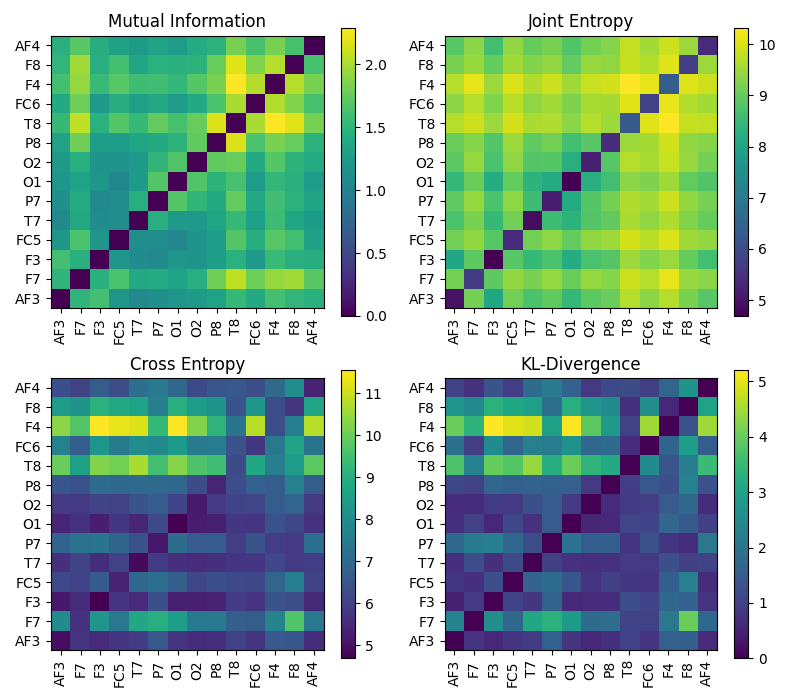
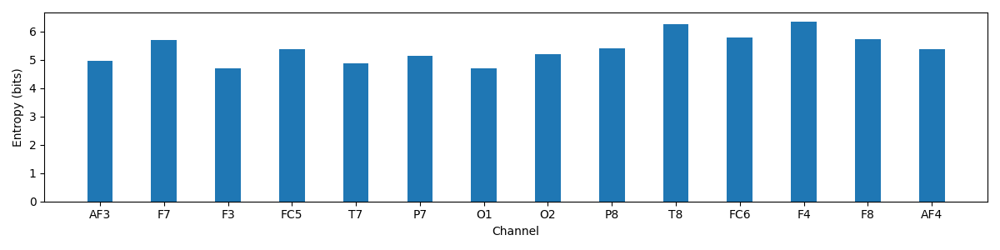
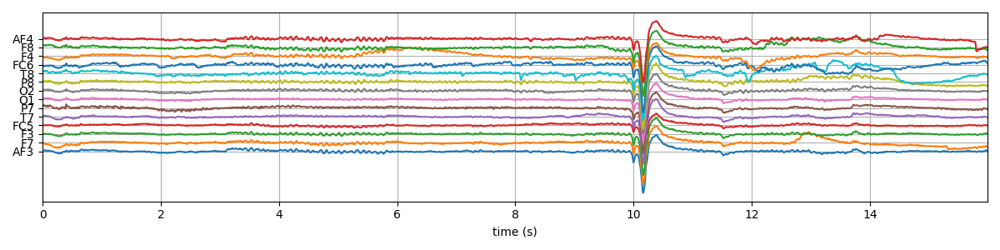
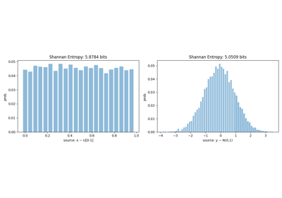
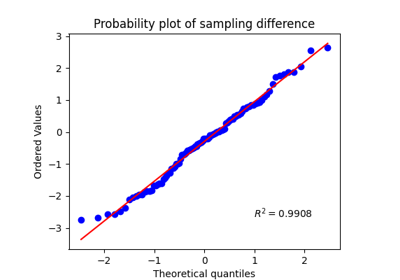
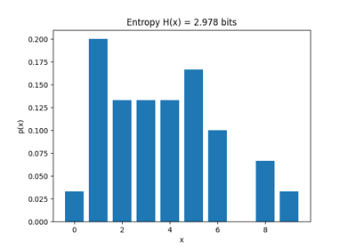

Note
Go to the end to download the full example code or to run this example in your browser via JupyterLite or Binder
Entropy - EEG Signal - Multi-Channel¶
An example of Entropy computation (Mutual Information, Joint Information, Cross-entropy and KL-Divergence Entropy) among multi-channels of a sample EEG signals.
Mutual Information
Joint Information
Cross-entropy and
KL-Divergence Entropy
- 
- 
- 
spkit-version : 0.0.9.7
/Users/nikeshbajaj/Library/CloudStorage/OneDrive-QueenMary,UniversityofLondon/Github/GIT3/Dev/SPKIT_Dev/SPKIT_DOC_7/examples/information_theory/plot_it_entropy_eeg_multi_channel.py:25: DeprecationWarning: function eegSample will be deprecated in future version, due to naming convension, please use 'eeg_sample_14ch' for updated/improved functionality [spkit-0.0.9.7].
(2048, 14)
['AF3', 'F7', 'F3', 'FC5', 'T7', 'P7', 'O1', 'O2', 'P8', 'T8', 'FC6', 'F4', 'F8', 'AF4']
Selecting two channels AF3 (Frontal Lobe)and O1 (Occipital Lobe)
-
Shannan entropy
Entropy of AF3: H(AF3)= 4.9573307496464665
Entropy of O1 : H(O1) = 4.697278111823318
-
Rényi entropy
Entropy of AF3: H(AF3)= 4.375932807816424
Entropy of O1 : H(O1) = 4.145472461333239
-
Joint Entropy: H(AF3,O1) = 3.750169316339896
Mutual Information I(AF3,O1)= 1.2071614333065703
Conditional Entropy of : H(AF3|O1)= 3.750169316339896
Conditional Entropy of : H(O1|AF3)= 3.4901166785167455
-
Cross Entropy of : H(AF3,O1)= 5.732514591834208
Kullback–Leibler divergence : Dkl(AF3,O1)= 0.7751838421877422
Entropy of Each channel
import numpy as np
import matplotlib.pyplot as plt
import spkit as sp
from spkit.data import load_data
print('spkit-version :', sp.__version__)
X,ch_names = load_data.eegSample()
t = np.arange(X.shape[0])/128
nC = len(ch_names)
print(X.shape)
print(ch_names)
print('Selecting two channels AF3 (Frontal Lobe)and O1 (Occipital Lobe)')
AF3 = X[:,0] #'AF3' - Frontal Lobe
O1 = X[:,6] #'O1' - Occipital Lobe
bins = int(max(sp.bin_width(AF3)[1], sp.bin_width(O1)[1]))
#Shannan entropy
H_x1= sp.entropy(AF3,alpha=1,bins=bins)
H_x2= sp.entropy(O1,alpha=1,bins=bins)
#Rényi entropy
Hr_x1= sp.entropy(AF3,alpha=2,bins=bins)
Hr_x2= sp.entropy(O1,alpha=2,bins=bins)
#Joint entropy
H_x12= sp.entropy_joint(AF3,O1,bins=bins)
#Conditional Entropy
H_x12= sp.entropy_cond(AF3,O1,bins=bins)
H_x21= sp.entropy_cond(O1,AF3,bins=bins)
#Mutual Information
I_x12 = sp.mutual_info(AF3,O1,bins=bins)
#Cross Entropy
H_x12_cross= sp.entropy_cross(AF3,O1,bins=bins)
#Diff Entropy
D_x12= sp.entropy_kld(AF3,O1,bins=bins)
print('-')
print('Shannan entropy')
print('Entropy of AF3: H(AF3)=\t',H_x1)
print('Entropy of O1 : H(O1) =\t',H_x2)
print('-')
print('Rényi entropy')
print('Entropy of AF3: H(AF3)=\t',Hr_x1)
print('Entropy of O1 : H(O1) =\t',Hr_x2)
print('-')
print('Joint Entropy: H(AF3,O1) =\t',H_x12)
print('Mutual Information I(AF3,O1)=\t',I_x12)
print('Conditional Entropy of : H(AF3|O1)=\t',H_x12)
print('Conditional Entropy of : H(O1|AF3)=\t',H_x21)
print('-')
print('Cross Entropy of : H(AF3,O1)=\t',H_x12_cross)
print('Kullback–Leibler divergence : Dkl(AF3,O1)=\t',D_x12)
print('Entropy of Each channel')
bins = int(max(sp.bin_width(ch)[1] for ch in X.T))
H_X= [sp.entropy(x,alpha=1,bins=bins) for x in X.T]
MI = np.zeros([nC,nC])
JE = np.zeros([nC,nC])
CE = np.zeros([nC,nC])
KL = np.zeros([nC,nC])
for i in range(nC):
x1 = X[:,i]
for j in range(nC):
x2 = X[:,j]
#Mutual Information
MI[i,j] = sp.mutual_info(x1,x2,bins=bins)
#Joint entropy
JE[i,j]= sp.entropy_joint(x1,x2,bins=bins)
#Cross Entropy
CE[i,j]= sp.entropy_cross(x1,x2,bins=bins)
#Diff Entropy
KL[i,j]= sp.entropy_kld(x1,x2,bins=bins)
MI_d = MI - np.diag(np.diag(MI))
plt.figure(figsize=(8,7))
plt.subplot(221)
plt.imshow(MI_d,origin='lower')
plt.yticks(np.arange(nC),ch_names)
plt.xticks(np.arange(nC),ch_names,rotation=90)
plt.title('Mutual Information')
plt.colorbar()
plt.subplot(222)
plt.imshow(JE,origin='lower')
plt.yticks(np.arange(nC),ch_names)
plt.xticks(np.arange(nC),ch_names,rotation=90)
plt.title('Joint Entropy')
plt.colorbar()
plt.subplot(223)
plt.imshow(CE,origin='lower')
plt.yticks(np.arange(nC),ch_names)
plt.xticks(np.arange(nC),ch_names,rotation=90)
plt.title('Cross Entropy')
plt.colorbar()
plt.subplot(224)
plt.imshow(KL,origin='lower')
plt.yticks(np.arange(nC),ch_names)
plt.xticks(np.arange(nC),ch_names,rotation=90)
plt.title('KL-Divergence')
plt.colorbar()
plt.tight_layout()
plt.show()
plt.figure(figsize=(12,3))
plt.bar(np.arange(nC)*2,H_X)
plt.xticks(np.arange(nC)*2,ch_names)
plt.ylabel('Entropy (bits)')
plt.xlabel('Channel')
plt.tight_layout()
plt.show()
plt.figure(figsize=(12,3))
plt.plot(t,X+np.arange(nC)*200)
plt.grid()
plt.xlim(t[0],t[-1])
plt.yticks(np.arange(nC)*200, ch_names)
plt.xlabel('time (s)')
plt.tight_layout()
plt.show()
Total running time of the script: (0 minutes 1.213 seconds)
Related examples


Entropy - Real-Valued Source


Testing two groups

Entropy - Discreet Source